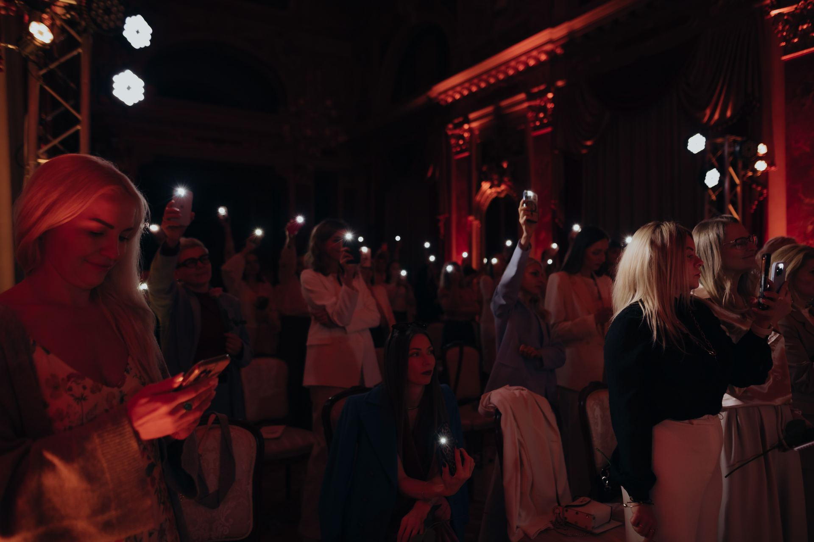

Ми віримо, що найбільші зміни не народжуються за один курс, одну книгу чи один ретрит.
Вони народжуються тоді, коли людина вірна шляху, який обирає.
Саме тому ми створили BELONG.
BELONG — це простір безперервного розвитку, який об'єднує всі продукти, події та можливості екосистеми Virea в єдиний шлях.
Ми не будуємо окремі продукти.
Ми будуємо шлях еволюції людини.
Кожен продукт екосистеми відповідає певному етапу цього шляху та допомагає пройти його глибше, чесніше і впевненіше.
Наша місія — допомогти людині прийти до повноти того, ким вона створена бути.
Ми віримо, що справжній розвиток потребує часу.
Саме тому BELONG створений для тих, хто обирає залишатися на цьому шляху стільки, скільки потрібно.
BELONG підтримує людей, які обирають безперервний розвиток.
Ми не надаємо знижки.
Ми інвестуємо в людей, які залишаються вірними своєму шляху.
Саме тому разом із часом участі для вас відкриваються нові можливості.
Інвестиція екосистеми у ваш наступний етап.
Ми віримо, що розвиток людини не повинен зупинятися через вартість наступного кроку. Саме тому ми створили Фонд розвитку.
Починаючи з третього місяця участі, екосистема щомісяця інвестує 42 € у ваш майбутній розвиток.
| Період | Баланс фонду | |
|---|---|---|
| 1 місяць | 0 € | |
| 2 місяці | 0 € | |
| 3 місяці | 42 € | |
| 4 місяці | 84 € | |
| 5 місяців | 126 € | |
| 6 місяців | 168 € | |
| 7 місяців | 210 € | |
| 8 місяців | 252 € | |
| 9 місяців | 294 € | |
| 10 місяців | 336 € | |
| 11 місяців | 378 € | |
| 12 місяців | 420 € | |
| 18 місяців | 672 € | |
| 24 місяці | 924 € |
Після використання Фонд починає накопичуватися знову.
Ми знаємо, що життя не рухається лінійно.
Іноді ми прискорюємося.
Іноді зупиняємося.
Іноді проживаємо періоди, коли потрібен час, щоб просто побути.
У BELONG це нормально.
Ваш шлях не обнуляється лише тому, що зараз у вас інший ритм життя.
Ваша інвестиція у наступний крок чекатиме на вас.
Якщо пауза триває довше, після повернення спеціальні умови починають накопичуватися знову.
Новий рівень участі в екосистемі Virea
Це можливість стати співтворцем екосистеми.
Ми віримо, що найкращими провідниками стають люди, які самі пройшли цей шлях.
Саме тому учасники BELONG можуть рекомендувати програми екосистеми іншим людям.
І якщо людина розпочинає свій шлях завдяки вам, ми дякуємо вам, інвестуючи у ваш подальший розвиток.
| До 1500 € | 15% |
| Від 1500 € | 7% |
Якщо учасник вже перебуває в екосистемі, але саме ваша взаємодія стала вирішальною для його наступного кроку, подяка становить:
| До 1500 € | 5% |
| Від 1500 € | 3% |
Іноді людині потрібен додатковий простір для прийняття рішення: консультація, відповіді на запитання або супровід від відділу турботи.
Якщо фінальне рішення про участь було прийняте після такої додаткової комунікації, подяка розподіляється між учасником BELONG та компанією у співвідношенні 50/50.
Ми віримо, що шлях людини часто створюється спільними зусиллями, тому прагнемо чесно враховувати внесок кожної сторони.
Ми цінуємо чесність, довіру та партнерство.
Автором рекомендації вважається людина, яка здійснила основний супровід учасника до рішення про участь у програмі.
Якщо вирішальний внесок зробили двоє учасників BELONG, подяка ділиться між ними порівну.
Наша мета не створювати конкуренцію всередині спільноти, а підтримувати культуру співпраці та взаємної поваги.
Ми віримо, що люди приходять до людей.
Найкращими провідниками стають ті, хто сам пройшов цей шлях.
Саме тому BELONG — це не лише простір розвитку, а й можливість стати співтворцем екосистеми.
Кожне щире запрошення можна порівняти із насінням.
Коли людина ділиться тим, що стало для неї цінним, вона допомагає іншій людині зробити перший крок до власних змін.
Ми віримо, що кожне добре посіяне насіння з часом приносить свої плоди.
Саме так ми бачимо розвиток нашої екосистеми: не через продажі, а через довіру, рекомендації та бажання ділитися тим, що справді змінило життя.

Stay as long as you need.